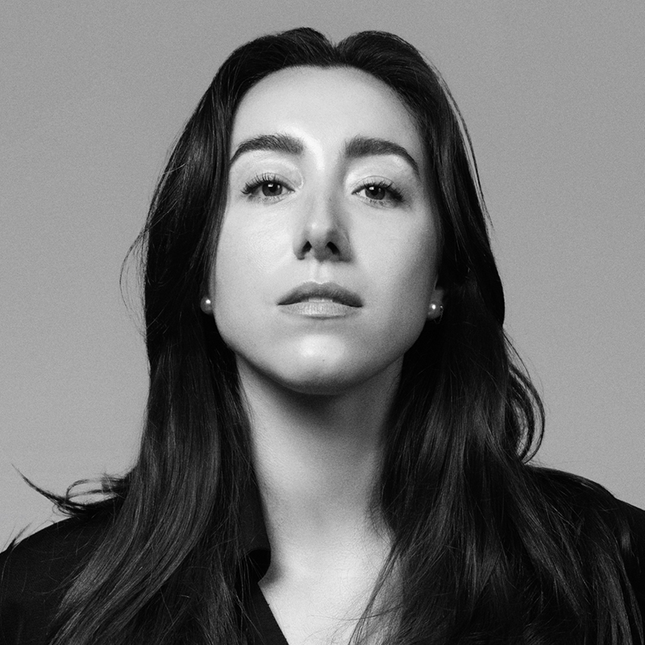
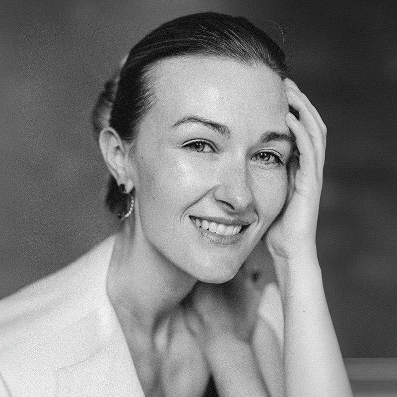

ЛОКАЦІЯ: UNIT.City, Київ, вул. Дорогожицька, 3, кампус B12
VOGUE UKRAINE CONFERENCE: FORCES OF FASHION 2025
Щорічна конференція Vogue Ukraine – масштабна професійна подія за участі світових і вітчизняних лідерів у сферах моди, медіа, освіти, цифрових технологій і бізнесу. Це мультидисциплінарна ініціатива для пошуку відповідей на найактуальніші виклики й запити сьогодення.
Цьогоріч Vogue Ukraine серед перших міжнародних видань Vogue долучається до глобальної ініціативи Forces of Fashion, що відбувається під егідою Анни Вінтур та видавничого Дому Condé Nast. Конференція пройде в повноцінному живому форматі.
VOGUE UKRAINE: FORCES OF FASHION 2025 ОХОПИТЬ ТАКІ ТЕМИ:
Глобальний контекст: тенденції, що формують майбутнє індустрії. Що мають враховувати бренди у своїх стратегіях розвитку.
Наступне покоління світових лідерів моди: хто визначатиме тренди й формуватиме смаки публіки.
Нове прочитання розкоші та еволюція ритейлу: як завоювати прихильність платоспроможної аудиторії.
СПІКЕРИ
Руслан Багінський та Петро Ясінський
Засновник та піар-директор бренду Ruslan Baginskiy
За 10 років Руслан і Петро побудували міжнародний бренд, що став комерційним і культурним феноменом. Серед зіркових клієнтів Багінського — поп-зірки Мадонна, Бейонсе та Леді Гага.
Маша Єфросиніна
Ведуча, громадська діячка
Конференцію Forces of Fashion проведе Маша Єфросиніна — знана телеведуча, авторка популярного ютуб-каналу й активістка. Заснована нею громадська організація «Фонд Маша» допомагає жінкам і дітям, які зазнали різних форм насильства.
Веня Брикалін
Головний редактор українського Vogue
Веня Брикалін був призначений головним редактором українського Vogue у травні 2023 року. На цій посаді він розвиває унікальний візуальний стиль видання та посилює позиції бренду на міжнародній сцені. Брикалін входить до рейтингу найвпливовіших людей в індустрії BoF 500 за версією ресурсу Business of Fashion.

Карлота Родбен
Засновниця Beyond Luxury Group
Авторка двох книг, ведуча подкасту про новації, моду й культуру Beyond Luxury. Колишня очільниця відділу інновацій у Chanel, Карлота є провідною консультанткою з питань майбутнього індустрії розкоші. Спеціалізується на переосмисленні цінності брендів та стратегічному плануванні.

Ольга Нікіткіна
Головна баєрка жіночих колекцій ЦУМ Київ
Ольга Нікіткіна має понад десять років досвіду в модній індустрії, вісім з яких присвятила баїнгу. 2021 року доєдналася до команди ЦУМ Київ, де зараз відповідає за баїнг жіночих колекцій провідних міжнародних брендів.
Тіффані Гілл
Креативна директорка, засновниця Trend Suite
Візіонерка, яка спеціалізується на прогнозуванні трендів, із понад 25-річним досвідом у комерційному секторі й індустрії розкоші. Має глибокі знання ринку й поведінки споживачів – завдяки Тіффані бренди створюють комерційно успішні продукти.
Євгенія Близнюк
Засновниця Gradus
Cоціологиня, яка працювала у провідних медіагрупах і керувала Департаментом аналітики Адміністрації Президента України. Сьогодні Євгенія Близнюк очолює технологічну компанію Gradus та проводить маркетингові й соціологічні дослідження в Україні, ЄС, США та Середній Азії.
Міла Магдій
Засновниця мережі PERSONALITY
Має багаторічний досвід у сфері ритейлу, спеціалізується на роботі з українськими модними брендами преміум-сегменту. Завдяки її глибокому розумінню сучасного клієнтського досвіду PERSONALITY стала прикладом сервісу нового покоління.
Андрій Федорів
Інвестор, підприємець, маркетолог
Експерт із маркетингу з 25-річним досвідом, Андрій Федорів є засновником компанії Fedoriv Group. Маркетингова агенція Fedoriv створила бренди та кампанії для Нова Пошта, Rozetka, Мінцифри, OLX та інших лідерів ринку. Співзасновник фонду Vesna Capital, що розвиває 23 технологічні стартапи. Автор найпопулярнішого українського курсу з брендингу BrandFather.
Ешлі Макдоннелл
Засновниця Tech Powered Luxury та Ireland Fashion Week
Ірландська підприємиця, засновниця й авторка подкасту Tech Powered Luxury та ірландського Тижня моди. Закінчила магістратуру провідної бізнес-школі Франції HEC Paris, працювала в LVMH та Christian Dior, обіймала керівні посади в Google та конгломераті PUIG.
Віолетта Федорова
Шеф-редакторка сайту vogue.ua
Очолює диджитал-редакцію Vogue Ukraine з 2017 року - відтоді аудиторія проєкту зросла більш ніж утричі. Особливий фокус — на моді як бізнесі та комунікації у фешн-індустрії. Є контрибуторкою міжнародних видань Vogue.
Оля Курищук
Засновниця та головна редакторка 1Granary
Створила впливову освітню платформу у фешн-сфері 1Granary, що об'єднує дизайнерів, школи та бренди навколо спільної місії — змінити систему моди зсередини, підтримати молоді таланти й створити середовище, в якому вони можуть будувати стійку кар'єру. Оля Курищук є однією з провідних експерток з бренд-стратегій нового покоління.
Фредрік Тімур
Засновник і генеральний директор Fashion Innovation Center
Шведський підприємець та експерт з питань сталого розвитку на перетині моди й технологій. Фредрік присвятив понад десятиліття розробці стратегій прозорості ланцюга поставок і цифрової інтеграції для боротьби з надмірним виробництвом одягу для брендів FILA, IKEA та IBM
Ліса Ланг
Директорка Open Connector
Здобула міжнародне визнання як «Лідерка думок у сфері сталості» за версією Vogue Business і була включена до списку 50 найважливіших жінок у сфері інновацій та стартапів у ЄС. Очолює Open Connector — платформу для індустріалізації циркулярних бізнес-моделей у сфері моди.
Сара Андельман
Креативна директорка, засновниця Just An Idea
Візіонерка, кураторка, креативна директорка культового паризького концепт-стору Colette, який змінив світовий модний ритейл. Відкрила світові бренди Proenza Schouler і Rodarte. Після закриття Colette заснувала власне креативне консалтингове агентство Just An Idea.
Марія Жданова
Програмна директорка конференції
Всебічна експертиза Марії ґрунтується на понад десятирічному досвіді у медіа, tech-індустрії й консалтингу. Вона щороку формує унікальний лайнап спікерів, керуючись вірою в силу креативних спільнот. На цьогорічній конференції Марія проведе паблік-ток з Олею Курищук, засновницею 1Granary.
КВИТКИ
REGULAR
Стандартні квитки
У вартість квитка входить: відвідування конференції, кава-паузи, обід.
У вартість квитка входить: відвідування конференції, зарезервоване місце в першому або другому ряду, кава-паузи, обід. Частина прибутку від продажу charity-квитків перераховується до фонду Veteranka. Кількість обмежена.
У вартість квитка входить: відвідування у конференції, гарантоване місце в першому або другому ряду, кава-паузи, обід, закритий ланч зі спікерами 12 листопада. Кількість обмежена.


.jpg)
.jpg)